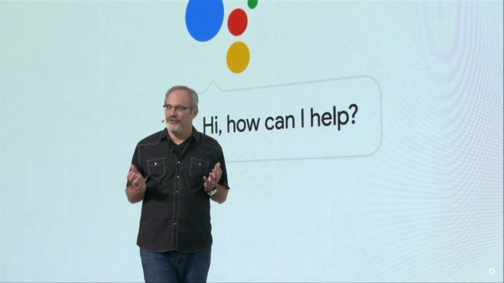
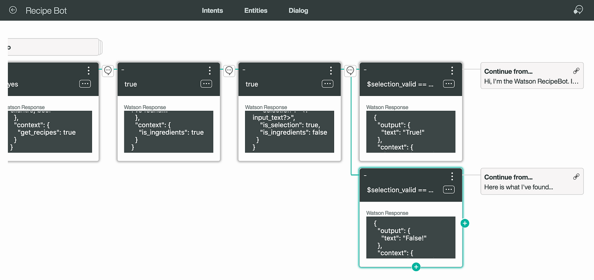
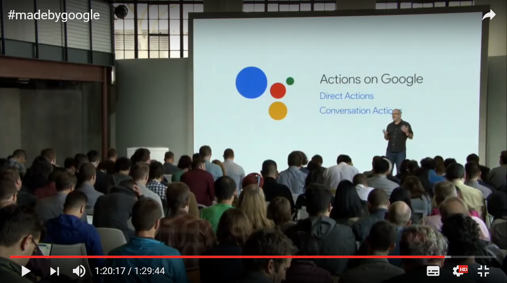
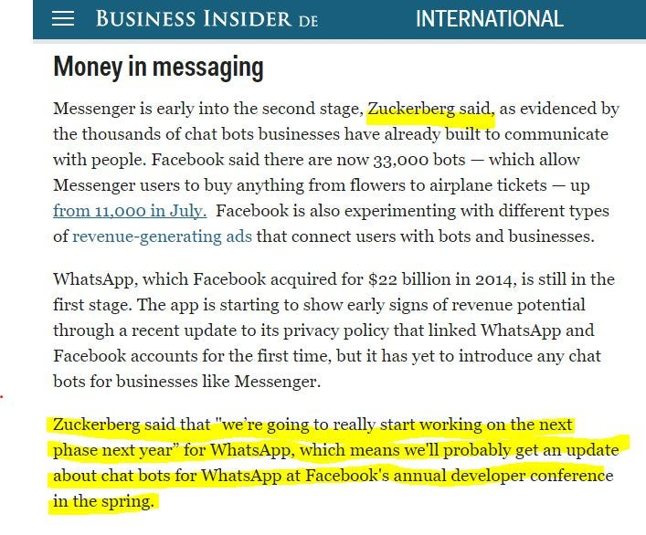
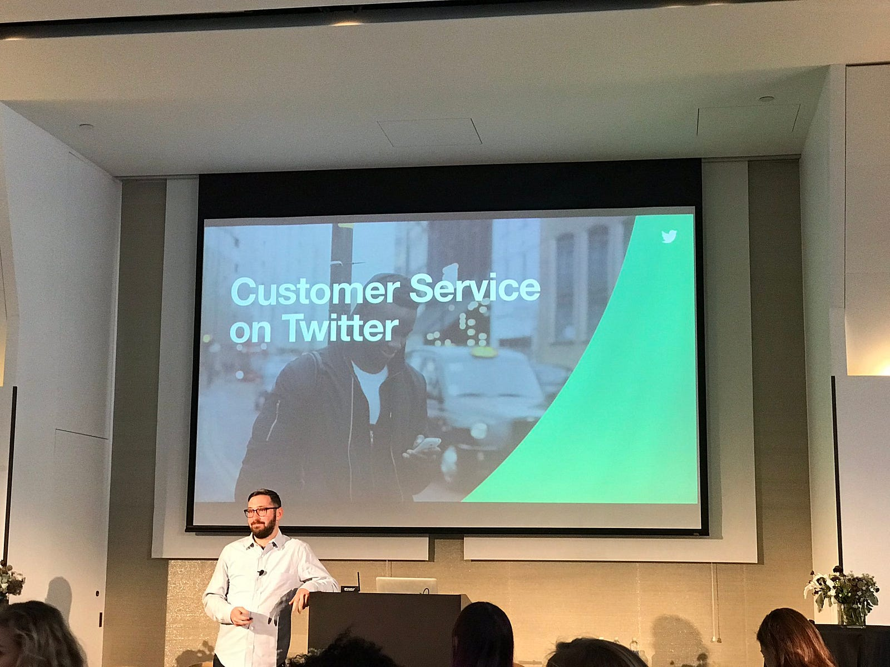
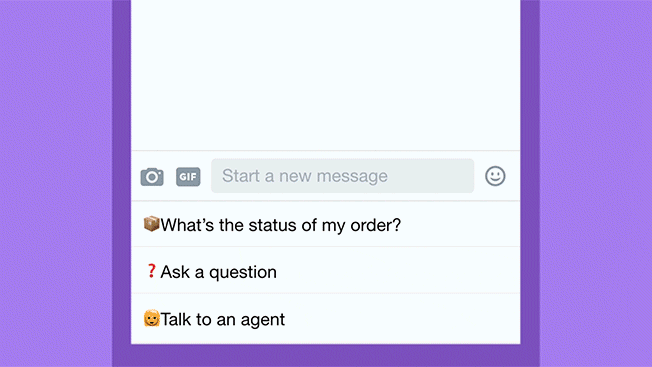
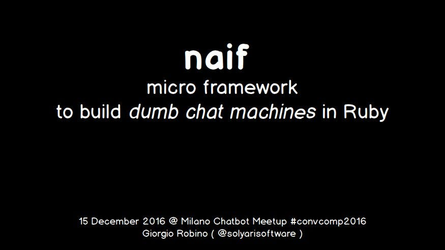

Whatsapp bots presto? ed altre news!
Nella mia veste qui di pseudo-giornalista, provo ad elencare alcuni recenti annunci ed accadimenti nel magico #botmondo, che mi pare siano…
Nella mia veste qui di pseudo-giornalista, provo ad elencare alcuni recenti annunci ed accadimenti nel magico #botmondo, che mi pare siano sfuggiti a tanto giornalismo tecnologico italico… Riporto in ordine cronologico alcuni fatti degli ultimi mesi del 2016, inserendo in corsivo mie riflessioni personali.

15 agosto — IBM Watson Conversation
Sorprendentemente, IBM in agosto dichiara “discontinued” il prodotto: Dialog, il modulo di IBM Watson dedicato alle applicazioni conversazionali
Script conversations any way you like to answer questions, walk through processes, or just to chat! Note: The Dialog service is deprecated as of August 15, 2016. See its documentation for more information.
annunciando subito il prodotto sostitutivo: Conversation, il servizio che ora IBM propone per lo sviluppo di bots. Nella pagina Dialog overview vengono introdotti i concetti del nuovo sistema.

mie note:
Dialog, per chi non lo sapesse, funzionava come un linguaggio di scripting, del tipo che io chiamo XML-like, ovvero con una sintassi simile all’AIML. Lo confesso: non mi piaceva la sintassi, inadatta ad un non-programmatore, cioè alla persona “autrice” di una applicazione di dialogo, cioè chi costruisce il dialog flow, ovvero una scrittrice, uno sceneggiatore, una psicologa, una persona esperta di narrative fiction, etc.
Conversation, invece, non è programmabile attraverso un linguaggio di scripting (per quel che mi è dato di sapere leggendo la documentazione sopra), ma presenta un GUI dialog builder del tipo che io chiamo “lego-bricks”, dove cioè lo sviluppatore disegna il flusso conversazionale attraverso un’interfaccia grafica click-and-point, congiungendo blocchi (bricks). Per dettagli, vedi documentazione.
La mia prima impressione è che Conversation (così come in precedenza è stato Dialog), sia una tecnologia ancora non ben consolidata…che assembla senz'altro buone idee (la gestione di regole, un linguaggio di query, etc.), ma perde, secondo me, l’occasione mancata di sviluppare un linguaggio di scripting innovativo ed universale, che io immaginerei essere una evoluzione/semplificazione di ChatScript, il sistema opensource inventato da Bruce Wilcox (che un pochino io supporto nel rework documentale su github).
Invece Conversation sembra conformarsi ad un modello di programmazione GUI simile ad API.ai, WIT.ai e molti simili RAD che nascono come funghi negli ultimi mesi.
Ora, capisco da un lato l’idea di “semplificare” il disegno di un dialogo attraverso l’uso di un’interfaccia web adatta a non programmatori, ma questo goal non è raggiunto perché in realtà lo sviluppo software con Conversation richiede una integrazione stretta con gli strumenti di programmazione trad (un linguaggio di programmazione, per esempio NodeJS o Python, etc., JSON per il passaggio dei dati, etc.). Personalmente non mi piace molto questo approccio “ibrido”, che divide la glue-programmazione in vari paradigmi, da un lato la logica conversazionale stateless, disegnata con uno strumento ad interfaccia grafica ad hoc, dall’altro la gestione del contesto, la logica di back-end e la gestione dello stato, da scrivere con un usuale linguaggio di programmazione.
JSON come se piovesse. No comment sul modello di pricing.
La mia speranza è che IBM torni ad essere leader tecnologico nell'ambito dell’apertura all’open-source e non nella proposta di AI-blackboxes.
In quel caso, mi piacerebbe collaborare alla costituzione di un tavolo di lavoro comune ad aziende e dipartimenti di ricerca per la definizione di un linguaggio di dialog scripting condiviso, e mi rivolgo senz'altro ad IBM come uno degli interlocutori che mi piacerebbe vedere tra i protagonisti e co-proponenti!
P.S. domani e dopodomani ci sarà a San Francisco l’evento Watson Developer Conference.
4 ottobre — Actions on Google
Con mia sorpresa, non ha avuto troppo seguito l’evento #madebygoogle del 4 novembre. A me ha colpito l’intervento di Scott Hufman, che ha presentato la tecnologia Actions. Tutto l’ecosistema API SDK probabilmente sarà reso pubblico entro dicembre 2016, insieme al lancio del dispositivo Google Home (il dispositivo ad interfaccia vocale, “rivale” di Amazon Echo).

mie note:
Il possibile successo di Google Allo è ancora un enorme punto interrogativo.
Il software Assistant, perfetta spia delle conversazioni chat di ogni utente, potrebbe diventare di default indispensabile per tutti, così come oggi lo è per quasi tutti noi “googlare” per cercare ogni info sul web,
ma potrebbe anche essere un grande flop, se nella percezione psicologica delle persone venisse mal tollerato il fatto che tutte le conversazioni saranno supervisionate da un suggeritore virtuale che tutto sa di noi…
E notino, lor signori, che una cosa è chattare con molteplici butler-chatbots che ci forniscono servizi one-to-one,altra cosa è avere un unico master bot (mi riferisco a Google Assistant dentro Allo, così come ad Amazon Alexa…) che re-interpreta ogni nostra azione, suggerendoci cosa dire, cosa fare… magari ridirigendoci secondo logiche non trasparenti (#noIntrospection)…
E’ un punto aperto questo, molto delicato negli impatti sociali, in termini di democrazia, a cui ho giò accennato riflettendo sulle esternazioni di Ted Livingston all'evento #talkabot.
Dunque, anche se l’annuncio di Huffman appare, ad un orecchio distratto, solo un elenco di annunci di cose meravigliose che saranno in futuro, in realtà delinea “pacatamente” una strategia tecnologica che potrà essere molto pervasiva nelle conseguenze dell’economia. Le “actions”, forse in qualche modo paragonabili agli Alexa skills (la tecnologia software sottostante Amazon Echo, per l’integrazione di applicazioni conversazionali business terze parti), sono lo strumento con cui Google probabilmente farà profitto con il local business… e la “foundation” è ovviamente il motore di ricerca, il knowledge graph, ovvero il tutto, tutti noi.
Stay tuned! Ma anche: stay con mutande di ghisa!
1 novembre 2016 — Whatsapp bots?
La notizia forte, per noi italiani tutti, bot-developers, startuppari, aziende piccine o multinazionali, è l’annuncio esplicito della integrazione di una piattaforma bots anche su Whatsapp. Le parole sono quelle del creatore di Facebook, durante il report meeting dell’ultimo trimestre 2016,
Ed ecco quanto ha affermato Mark Zuckerberg ed una deduzione sulle tempistiche, del giornalista Alex Heath, e cioè di un possibile rilascio di API per Whatsapp in occasione dell’evento #FBF8, in primavera 2017:

mie note:
L’annuncio di Zuckerberg è solo un accenno alla integrazione (rispetto alla piattaforma bots) di FB con WA, nel 2017, ma è avvalorata anche da un annuncio comparso in agosto nel blog di WA:
https://blog.whatsapp.com/10000627/WhatsApp-guarda-avanti
Azzardo quindi addirittura un mio personale pronostico: l’Italia sarà possibile beta test country per la zona EMEA, e forse il Brasile per il Sud America.
Magari mi sbaglio ma se tanto mi dà tanto…
Ora, sebbene io sia un sostenitore della “ideologia” e della tecnologia di Telegram Messenger, che, attraverso una piattaforma molto aperta, permette di sviluppare applicazioni conversazionali non-solo-business e quindi perfetta per esempio per applicazioni sociali, etc. etc. Diciamocela tutta:
In Italia il 90% (o poco meno?) della popolazione chattante usa Whatsapp e quindi, a mio avviso l’esplosione di una #boteconomy, che credo darà linfa ad una economia del nostro territorio (in particolare penso ad un ecosistema #convcomm, per la vendita di prodotti e servizi di “prossimità”), esploderà solo quando sarà possible sviluppare bots sulla piattaforma che la maggior parte degli italiani (non io), hanno installato sul proprio cellulare ed usano per gli usi più deprecabili. Quindi? Benvengano asap i chatbots su Whatsapp. Mi voglio sbilanciare con lo slogan: W Whatsapp e la #boteconomy italiana!
Twitter —Welcome Messages and Quick Replies

1 novembre. Twitter lancia in beta il nuovo servizio, che, decidete voi come chiamarlo, per me è “la nuova bot platform di Twitter”.
In sostanza Twitter propone un sistema di bots dedicato alle aziende, in particolare al customer care. Sono ad oggi attivi prototipi online per un pò di grandi aziende e… per esempio il bot @gov che fornisce informazioni sulle odierne votazioni in USA:
Voilà un esempio di conversazione di tipo customer care:

8 novembre 2016 — Messenger Platform v1.3
Ma torniamo a Facebook con una notizia fresca di giornata: Messenger ha rilasciato oggi, anticipando di 1 mese quanto annunciato Mikhail Larionov all’evento #cbc16.
L’aggiornamento prevede utili UI widget e una tecnologia pagamento (chiamata tokenization) per integrazione payment provider terze parti (cioè Paypal e Stripe a parte), per dettagli, vi invito a vedere il talk di Mikhail Larionov all’evento #cbc16:
Notizia di poche ore fa, annunciata prima da David Markus e poi da Mikail:
E Microsoft? E Telegram? E Slack?
Ci sono alcune cose che bollono in pentola, in Microsoft (che ha appena rilasciato Teams, il “concorrente” di Slack), Telegram, tra gli altri, ed ecco qui… ma no!Invece che parlarvi di rumors, aspettiamo qualche conferma!
Last but not least, se posso permettermi una piccola pubblicità personale: sto preparando, nel tempo libero, codice e le slides di un mio giochino #botdev #opensource:

Ci vediamo il 15 dicembre a Milano? 😊
Stay tuned!
giorgio
Originally published on Medium.